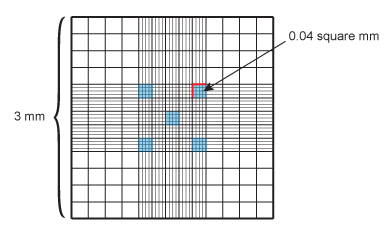

Protocols for growing Dictyostelium discoideum
Please cite: Fey, P., Kowal, A. S., Gaudet, P., Pilcher, K. E., Chisholm, R. L. (2007) 'Protocols for growth and development of Dictyostelium discoideum.' Nat Protoc 2:1307-16
Here we describe conditions for successfully growing Dictyostelium cells. Other protocols that used to be combined as 'General Dictyostelium Techniques' are methods for Dictyostelium development and for long-term storage of cells and spores.
Contents
General considerations for culturing Dictyostelium
Dictyostelium cells are relatively easy to grow: they proliferate either in association with bacteria on a solid substratumor in a rich liquid medium. Because Dictyostelium is a free-living unicellular organism, there is no need to control nitrogen or carbon dioxide. The cells can be grown in a standard microbiology incubator or on the laboratory bench provided that the room temperature is kept constant at approximately 22°C. Development is induced by starvation and proceeds under the same conditions. This paper describes cell culturing and development procedures for Dictyostelium and provides many useful tips formanipulating this organism.
When grown on bacteria, Dictyostelium cells have a doubling time of approximately 4 h. However, in the laboratory, it is often desirable to grow Dictyostelium cells as a pure culture in the absence of bacteria, known as axenic growth. Wild-type strains are unable to grow in axenic conditions. Derivatives of the wild-type strain NC-4 that can grow free of other living organisms (axenic or AX strains) have been obtained (1,2). Cells grown in axenic medium have slower growth rates with a doubling time of roughly 8-12 h depending on temperature, medium and the presence of selective drugs (3). Growth can also vary significantly between different cell lines. Axenic strains can easily be transferred from bacterial growth conditions to axenic culture.
Use the following formula to determine the doubling time, the final cell density given a certain inoculum or the inoculum necessary for a given final cell density:
N = No2n, where N is the final cell density, and n the number of generations.
To prevent contamination with yeasts, bacteria or fungi, it is recommended to work in a sterile hood and supplement media with antibiotics. Optimal growth of Dictyostelium is observed at a temperature of 21-23°C. Growth is significantly inhibited above 25°C.
When culturing Dictyostelium cells, it is important that they remain in an exponential growth phase (less than 4 x 106 cells ml-1) rather than allowing them to reach stationary phase. Cultures of higher densities begin to secrete factors that trigger entry into development, therefore changing the physiology of the culture. On the other hand, it is not recommended to dilute the cells to less than 1 x 104 cellsml1, as cultures of lower cell densities lag for a period that can be difficult to estimate. It is good practice to maintain a regular schedule for splitting the cultures to ensure a healthy cell population. A stock culture should not be grown beyond 4 x 106 cells ml-1. It is imperative to renew Dictyostelium cultures every 2-4 weeks from frozen or silica stock. Prolonged culturing will lead to the accumulation of undesired mutations.
The Dictyostelium cell density can be determined by counting the cells using a hemocytometer (see below) or, if available, a Coulter Counter. Note that the cell density cannot be calculated by taking the optical density (OD) of a Dictyostelium culture; the cells are too heterogeneous in size and because of their weight they settle too quickly for measurement.
Introduction to growth of Dictyostelium cells
Grow Dictyostelium cells using the most appropriate method, as detailed in different methods below. Axenic growth, either shaking in suspension or stationary in plastic dishes, is the most common method to maintain Dictyostelium strains in molecular biology laboratories. Plastic dishes are preferred if it is desirable to observe cells or to let cells attach to a substrate during growth. Cells grown axenically can be used for all molecular and cellular biology procedures, such as transformation (4) and RNA/DNA extraction (5,6). Note that only axenic strains (AX2, AX3, AX4 and derivatives) can be grown using axenic medium. In contrast, all Dictyostelium strains can grow on bacteria, their natural food source; these procedures can be used to grow axenic strains but it is mandatory to use these methods for cells that are not axenic (e.g., wildtype strain NC-4). Growth rates are about twice as fast when cells are grown on bacteria compared to axenic medium. The two most commonly used bacterial species on which to grow Dictyostelium are Aerobacter aerogenes (also known as Klebsiella aerogenes) and Escherichia coli B/R20. Of the latter, a neomycin-resistant strain exists (E. coli B/R-1) (7). Cells can be grown with bacteria on agar plates; of the methods described, this one is most similar to growth in the natural habitat of Dictyostelium. Plating cells on bacteria is also an efficient way to isolate clones. To grow non-axenic cells or cells that do not grow well in a bacteria-free suspension, growth with heat-killed bacteria in suspension and with bacteria in buffer are additional options.
[TOP] [INDEX]
Determination of cell density
|

|
The cell density is easily determined by counting an aliquot of the culture in a hemocytometer. A 50 µl sample will be sufficient to fill the hemocytometer chamber. The standard hemocytometer carries a grid that is 3 mm on a side (see image). There are nine large squares, each 1 mm on the side. In the center, the large square is divided into 25 small squares, each 0.2 mm on a side, or 0.04 mm2. As the coverslip sits 0.1 mm above the surface of the hemocytometer, the volume above each 0.04 mm2 square (indicated by blue squares) is 0.004 mm3 (or 0.004 µl).
- Count five of the 0.04 mm2 squares. For example, count the cells in the four corner squares and the center square (blue squares).
- Calculate the sum of cells counted in the five squares, which make up a combined volume of 0.02 mm3 (5 x 0.004 ml, or 0.02 ml).
- Multiply the cell count by 50,000 to obtain the cell density in cells per ml.
Note: Cells might be on the border of a square. Count cells on two side borders only, and on the same two sides for each square. For example, count cells on the upper and left border, but not those on the right and lower border (indicated by red lines).
Note:The most accurate count will be obtained when between 100 and 200 cells are counted. When the cell density of the culture approaches 1 x 107 cells ml-1, it is recommended to dilute the culture sample 1:5 before adding to the hemocytometer.
|
[TOP] [INDEX]
Axenic growth in suspension
- Inoculate cells at about 5x104 cells ml-1 in a glass flask containing HL5 or FM medium, shaking in an incubator at 22°C, 180 r.p.m.
Note: Make sure that the volume of medium does not exceed 20% of the volume of the flask to achieve sufficient aeration.
- Subculture after 2-3 days by making a 1:100 dilution into fresh medium before the maximum cell density of 2x107 cells ml-1 is reached; it is not desirable to let cells grow beyond 4x106 ml-1.
- If cells are going to be induced to develop, proceed directly to the development protocols. Cells can also be used in molecular biology applications, such as transformation (4) and RNA/DNA extraction (5,6). Follow these instructions to prepare permanent stocks.
Timing: 2-3 days
Troubleshooting: Cells do not grow: Start a new culture from stocks; Check number of cells inoculated. If cell density is below 2x104 ml-1, cells might go through a lag phase and have difficulties to grow in suspension. Check water quality; Check pH of the medium before and after autoclaving; Check peptone; Try adding vitamin stock from FM medium recipe to HL5.
[TOP] [INDEX]
Axenic growth in plastic dishes
- In a 100 mm dish, add 10 ml of HL5 or FM medium and 1-2 x 104 cells ml1. Gently mix the cells with the medium to obtain an even distribution. Cells will attach to the plastic surface and can be observed with a standard tissue culture microscope using x30-100 magnification. Grow at 21-23°C.
Note: Cells can be grown axenically in regular bacteriological Petri dishes. Alternatively, coated tissue culture dishes can be used, but the coating is not necessary for Dictyostelium amoebae to grow and attach.
- Subculture when the cells are subconfluent or reach a density of 2-4 x 106 ml-1, which takes 2-4 days, depending on the strain. Make a 1:100 to 1:200 dilution into fresh medium and add to a new dish.
- If cells are going to be induced to develop, proceed directly to the development protocols. Cells can also be used in molecular biology applications, such as transformation (4) and RNA/DNA extraction (5,6). Follow these instructions to prepare permanent stocks.
Timing: 2-4 days
Troubleshooting: HL5 medium in dish turns 'yellow' and/or cells are dense, detached and round: pH changes in the medium owing to uptake of nutrients by cells and dehydration. Change medium at least every 3 days. If cells are very dense, dilute 1:200.
[TOP] [INDEX]
Growth with live bacteria on SM plates
- Mix 0.2 ml of an overnight culture of bacteria with 8 x 104 Dictyostelium cells. Evenly spread the mixture on a 100 mm SM agar plate using a sterilized glass spatula. If spores are used, take 2-3 spore heads (approximately 2-4 x 105 cells) mixed with 0.2 ml bacteria to inoculate each SM plate. Pipette up and down to mix the spores well with the bacteria. The inoculum is higher when spores are used because the germination process provides time for the bacteria to grow.
NoteThe inoculum of Dictyostelium cells is important; if too many cells are used, they will consume the bacteria too quickly, thus depleting the food source.
- Incubate at 21-23°C. Invert the plates so that condensation, if formed, does not drip into the culture.
Note: Use fresh, moist SM plates to insure good growth.
- Grow the culture until the appearance of the plate changes from opaque (from the bacterial lawn) to more translucent. Because of their faster growth rate, the bacteria initially produce a confluent lawn, and the amoebae subsequently 'clear' the plate of the bacteria. At this point, the smell of the plate changes from bacterial to a smell similar to forest soil. The expected yield is about 1 x 109 cells per plate.
Note: If cells are not harvested as soon as the plate is cleared, cells enter development and fruiting bodies are produced. This is visible in aggregation centers that can be recognized by eye; fruiting body formation is completed after 24 h. Conversely, when cells are harvested too early, the yield will be significantly lower.
- Wash cells relatively free of bacterial cells with DB by three to four sequential centrifugations at 500g for 4 min each at room temperature (see below, 'Initiating an axenic culture from bacterially grown cells', for detailed washing instructions).
- To induce cells to develop, proceed directly proceed directly to the development protocols. Alternatively, axenic strains can be transferred into HL5 containing streptomycin sulfate and ampicillin to initiate an axenic culture. Non-axenic cells should be washed twice again to minimize the contamination with bacteria and can then be used for applications such as DNA and RNA preparations (5,6).
Timing: 2-3 days
Troubleshooting: Asynchronous 'spotty' growth on bacterial plates: Bacterial culture might not be fresh ormight not have grown well. Use a fresh, healthy, overnight bacterial culture. You might increase the amount of bacteria; concentrate the volume by centrifugation and resuspend in 200 μl. Plates might be old and dry; use fresh plates instead.
[TOP] [INDEX]
Growth in suspension in association with heat-killed bacteria in SM broth
- Grow bacteria overnight at 37°C in a sterile culture flask to stationary phase in SM broth. Flask of any size is acceptable; however, the culture should never exceed 20% of the flask volume.
- Autoclave the culture to kill the bacteria. The heat-killed bacteria serve as the main nutrient for growing Dictyostelium cells.
- Inoculate Dictyostelium at 3 x 103 to 1 x 104 cells ml-1 (final concentration) directly into the autoclaved, cooled (to room temperature), bacterial culture.
- Incubate at 22°C, shaking at 180 r.p.m. Doubling time is approximately 4 h, depending on the strain. The maximum yield is 1-2 x 107 cells ml-1.
- Wash cells twice with 0.5 volume of DB. Centrifuge at 500g for 4 min at room temperature for each wash.
- To induce cells to develop, proceed directly to the development protocols. Non-axenic cells should be washed an additional three times to minimize the contamination with bacteria and can then be used for applications such as DNA and RNA preparations (5,6).
Timing: 40-48 h
[TOP] [INDEX]
Growth in suspension in association with live bacteria in phosphate buffer
- Grow a bacterial culture overnight at 37°C in 1 liter of LB.
- Centrifuge at 3,000g at 4°C for 15 min to pellet the bacteria.
- Wash bacterial cells by resuspending the pellet in 200 ml DB and centrifuge at 3,000g. Remove the supernatant and wash again.
- After the second wash, resuspend the bacteria in DB at an OD600 of 8.0. The approximate volume of DB to resuspend E. coli B/r is 0.5 liter.
Note: The OD differs among bacterial strains. To measure the OD600, resuspend in 0.2 liter, make a 1:20, a 1:40 and 1:60 dilution, and measure the OD. Dilute the bacterial culture as required.
- Inoculate Dictyostelium cells at 3 x 103 to 1 x 104 cells ml-1. The bacteria are still alive but cannot grow in phosphate buffer. They serve as the only food source for Dictyostelium.
- Incubate at 22°C, shaking at 180 r.p.m. Doubling time is approximately 4 h, depending on the strain. The maximum yield is 1-2 x 107 cells ml-1.
- Wash cells twice with 0.5 volume of DB. Centrifuge at 500g for 4 min at room temperature for each wash.
- To induce cells to develop, proceed directly to the development protocols. Non-axenic cells should be washed an additional three times to minimize the contamination with bacteria and can then be used for applications such as DNA and RNA preparations (5,6), or for any other desired application.
Timing: 40-48 h
[TOP] [INDEX]
Initiating an axenic culture from bacterially grown cells
Dictyostelium cells can easily be transferred from a bacterial plate to axenic growth in suspension. Separation of bacteria and Dictyostelium occurs owing to the difference in weight between the two cell types. This procedure results in a large axenic culture in a relatively short period of time.
Option: If large quantities are not needed, the cloning method detailed in the next protocol describes the generation of axenic cultures from spores, as detailed there in steps 2-4.
- Use a sterile loop to remove amoebae from a single colony on a bacterial plate (grow single colonies as described below, but use vegetative cells from the feeding front at the perimeter of the plaque, where cells are feeding and dividing) and suspend in 0.2 ml fresh bacterial overnight culture.
- Using a sterilized glass spatula, spread the bacteria-Dictyostelium mixture onto an SM agar plate and incubate at 22°C.
- Harvest the cells when the plates have been cleared of bacteria but before fruiting bodies have formed (2-3 days) by flooding the plate with 3-4 ml of DB. Recover cells by gently scraping with a sterile spatula, transfer to a 50 ml conical plastic tube, fill with 40 ml DB, briefly vortex and centrifuge at 500g for 4 min at room temperature.
- Discard the cloudy supernatant containing the bacteria and resuspend the Dictyostelium cells in 45 ml DB. Wash four more times to remove as many bacterial cells as possible.
- Resuspend the final pellet in 25 ml HL5 containing streptomycin and ampicillin and transfer to a 125 ml Erlenmeyer flask. Incubate for 2-3 days at 22°C, shaking at 180 r.p.m.
- Transfer a small volume (1-2 ml) into a 250 ml flask containing 50 ml fresh HL5; at this point, the addition of antibiotics is optional. Make sure to retain the bacterial plates with clones (from step 1) until it is clear that the axenic cultures are growing well and are not contaminated.
- These cells can now be maintained axenically as described.
Timing: 5-6 days until large cultures can be inoculated at step 6.
Troubleshooting: Bacteria are not separated from cells: To exclude bacteria as much as possible, make sure that the supernatant is cloudy after the first centrifugation, indicative of a large number of bacteria remaining in suspension; if not, reduce the speed and/or the time of centrifugation. Cloudiness should diminish with each washing step
Alternative Method to initiate an axenic culture from bacterial growth
- Harvest cells from the edge of a growing Dictyostelium clone (at least 1 cm diameter) from a bacterial SM plate by scraping with a loop. Try to minimize the amount of contaminating bacteria, but do not be overly concerned. Use fresh plates.
- Suspend the cells in 1 ml HL5 in 13x100 mm sterile tubes or in wells of a 24-well plate. The HL5 should be supplemented with 300-500 µg/ml of dihydrostreptomycin-sulfate or with ampicillin and streptomycin. Start at least 4 tubes/wells for each strain.
- Incubate 1-2 of days at 21-22°C without shaking. This allows the cells to consume the remaining bacteria and become axenic.
- Change the medium.
- After two more days the contents of the tubes are transferred to a flask with HL5 which might contain specific drugs (10 ml in a 50 ml flask); shake at 21-22°C. This yields a growing culture in a week. Cells that have been cultured for several transfers on bacterial plates seem to take longer to get established in axenic medium.
-
J. Franke, 1983 (rev. 12/92; 05/2002; 11/2005)
[TOP] [INDEX]
Clonal isolation
Isolate clones tocreate permanent stock cultures or after a transformation (4). Clones can be isolated on agar plates if the density of cells per plate is sufficiently low. Alternatively, clones can be isolated in liquid medium using multiwell plates (4). However, for general cloning, it is recommended to use the method described here as it is faster and easier.
- Plate 100 or fewer cells in 0.2 ml bacterial broth on a 100 mm SM plate (see also 'Initiating an axenic culture from bacterially grown cells'). Each amoeba will generate a single spot or plaque on the bacterial lawn, which will start to form fruiting bodies from its center. From plating to the availability of spores, it typically takes 4-6 days.
- Use spores from the fruiting bodies produced by an individual clone to inoculate an axenic culture in a small (35 mm) Petri dish. Pick one or two spore heads with a sterile loop and disperse in the Petri dish filled with 1-2 ml HL5 supplemented with streptomycin and ampicillin. Spores will germinate after a few hours to produce amoebae.
- Grow at 21-23°C until significant growth is visible, but do not let the plate become confluent (1-2 days) (see above for additional information on axenic growth in Petri dishes).
- Transfer to one or more 100 mm dishes and grow the desired amount of cells. Growth of one subconfluent 100 mm plate (2-4 x 106 cells ml-1) from one or two spore heads takes 4-5 days. If many cells are needed, follow the procedure above to initiate an axenic culture from bacterial cells.
Note: Even if the cloned strain is resistant to a selective drug, the HL5 used to inoculate spores should not contain this antibiotic because there is a short delay before the germinated amoebae express the resistance gene. Add selection drugs 12-24 h after inoculation. However, it is critical to add ampicillin and/or streptomycin to the HL5, since it is possible that bacteria are transferred to the culture along with the spores.
Timing: 4-5 days until clones are growing on the agar plate; 8-11 days until the yield is 2-4 x 107 clonal cells in HL5
[TOP] [INDEX]
Materials
Media and buffers for Dictyostelium growth and development can be found on the Media page, the recipe for FM is separate.
Equipment
- Sterile culture flasks
- Sterile 100 mm Petri dishes
- Sterile 15 and 50 ml conical tubes
- Incubator set at 21–23°C This may be either a shaking incubator for growth in suspension or a stationary incubator for growth in plastic dishes. Alternatively, cultures can be maintained at room temperature, provided that the temperature in the laboratory is constant and below 25°C.
- Bacteria loop
- Hemocytometer
- Light microscope
- Micropipette (P1000, P200)
- 100 mm Petri dishes
- 35 mm Petri dishes
- Glass pipettes
- Glass spatula
- Autoclave
[TOP] [INDEX]
References
- Sussman, R. & Sussman, M. Cultivation of Dictyostelium discoideum in axenic medium. Biochem. Biophys. Res. Commun. 29, 53-55 (1967).
- Watts, D.J. & Ashworth, J.M. Growth of myxameobae of the cellular slime mould Dictyostelium discoideum in axenic culture. Biochem. J. 119, 171-174 (1970).
- Ashworth, J.M. & Watts, D.J. Metabolism of the cellular slime mould Dictyostelium discoideum grown in axenic culture. Biochem. J. 119, 175-182 (1970).
- Gaudet, P., Pilcher, K.E., Fey, P. & Chisholm, R.L. Transformation of Dictyostelium discoideum with plasmid DNA. Nat. Protoc. 2, 1317-1324 (2007)
- Pilcher, K.E., Gaudet, P., Fey, P., Kowal, A.S. & Chisholm, R.L. A reliable general purpose method for extracting RNA from Dictyostelium cells. Nat. Protoc. 2, 1329-1332 (2007).
- Pilcher, K.E., Fey, P., Gaudet, P., Kowal, A.S. & Chisholm, R.L. A reliable general purpose method for extracting genomic DNA from Dictyostelium cells. Nat. Protoc. 2, 1325-1328 (2007).
- Hughes, J.E., Podgorski, G.J. & Welker, D.L. Selection of Dictyostelium discoideum transformants and analysis of vector maintenance using live bacteria resistant to G418. Plasmid 28, 46-60 (1992).
[TOP] [INDEX]